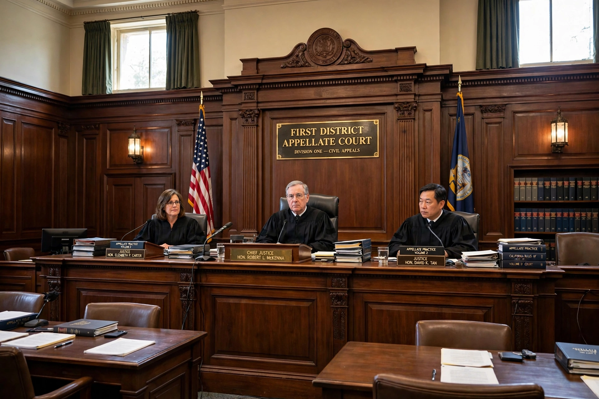

Appellate jurisdiction is the power of a higher court to review, amend or overrule decisions of a trial court or other lower tribunal. It is contrasted with original jurisdiction, under which a court hears a case in the first instance. Most appellate courts do not retry facts; they examine the record of the proceedings below for errors of law or procedure.
An appeal is ordinarily limited to matters raised and preserved in the court below. Appellate judges work from the written record, the parties' briefs and oral argument; new evidence is generally inadmissible. Many systems require leave to appeal for some classes of case, allowing appellate courts to control their dockets by selecting questions of general importance.
The intensity of appellate scrutiny varies with the type of ruling challenged. Questions of law are typically reviewed de novo (anew, with no deference), findings of fact for clear error, and discretionary rulings — such as case management or sentencing within a range — only for abuse of discretion. Errors that could not have affected the outcome may be disregarded as harmless error, and in criminal cases certain fundamental errors can be noticed on appeal even if not objected to at trial ("plain error").
The Constitution gives the Supreme Court appellate jurisdiction over cases arising under federal law, subject to exceptions and regulations made by Congress (the Exceptions Clause, interpreted in Ex parte McCardle). Federal courts of appeals hear appeals from district courts, while state systems generally provide an intermediate appellate court and a state supreme court. A small class of cases reaches the US Supreme Court under its original jurisdiction instead, such as disputes between states.
An appellate court may affirm the decision below, reverse it, or vacate it and remand the case for further proceedings consistent with its opinion. It may also modify the judgment directly. Appellate decisions create precedent binding on lower courts within the hierarchy, which is the mechanism by which much of the common law develops. A party dissatisfied with an appellate ruling may seek further review, rehearing en banc, or review by a higher court through procedures such as certiorari.
See also: Appeal, Original jurisdiction, Leave to appeal, Litigation.